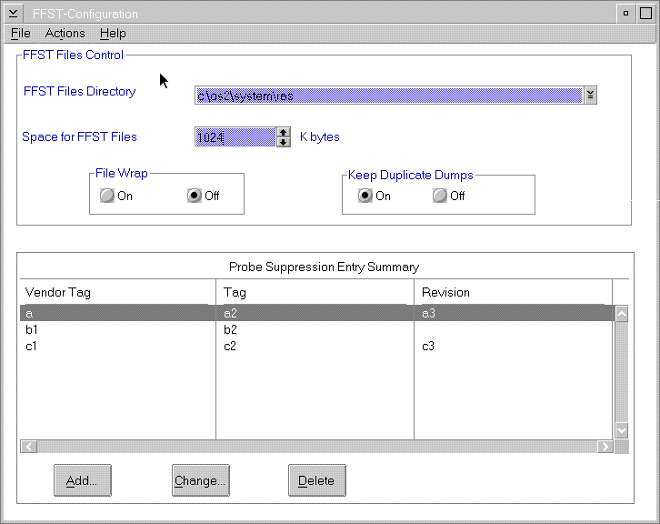

You can use the FFST setup utility to define the following configuration information:
The FFST setup contains the following configuration information:
The system saves your updated configuration information. FFST can dynamically start using the new options when you are finished with the utility.
You can use the FFSTCONF command or select the FFST Setup icon in the Problem
Determination Tools folder to access the FFST Setup window (FFST Setup Window).
FFSTSetupWindow

You use the FFST Setup window to maintain information dealing with FFST files. The information specifies:
The options on the FFST Setup window are:
The following actions are descriptions of the fields on the FFST Setup window. FFST dump management uses the fields to control the FFST files by defining the storage size and characteristics.
FFST Files Directory
If this option is not used (OFF), the system requires FFST to check all the dump files. FFST checks to ensure that a dump file does not exist for this call to FFSTProbe. When you use this option, processing is slower than normal processing. Use this option to control runaway probes that create unneeded dumps that take up disk space.
Even though the snapshot trace files are separate physical files, they are part of the FFST dump file so this option also affects them. This option works in conjunction with file wrap option.